Follow the bloom from Kyushu to Hokkaido: when each region peaks, 16 top spots, five routes that fit around your Tokyo and Kyoto dates, and the best luxury hotels and ryokan along the way.
Our pick: swap Tokyo for the West, keep Kyoto, then go up into the Alps. Sat Mar 27 → Thu Apr 1:the West (Fukuoka, Kumamoto, Miyajima, Himeji). Thu Apr 1 → Mon Apr 5: Kyoto as planned (Kyoto guide). Mon Apr 5 → Sat Apr 10:the Japan Alps (Kanazawa, Takayama, Matsumoto, Takato), ending in Tokyo for the flight home.
That follows the sakura front north and uphill. Normal full bloom (JMA, 1991–2020 average) is Mar 31 in Fukuoka, Apr 3 in Hiroshima, Apr 4 in Kyoto and Apr 8 in Kanazawa, and the Alps towns peak after that. So each stop lands near its own peak.
Want Tokyo after all? Keep Tokyo Mar 27–Apr 1 (see the Tokyo guide) and just add the Alps after Kyoto.
Want ryokan and Fuji instead of the Alps? Use Fuji & Hakone after Kyoto. It has two Category 6 Hyatt hotels for your Globalist status.
Short on time?Yoshino & Nara is a 2-night add-on from Kyoto.
Another spring?Tohoku & Hakodate in late April has the north’s biggest shows (Hirosaki, Kakunodate).
Book refundable. There’s no 2027 forecast yet. japan-guide expects its first one around February. Bloom can swing a week or more either way: Fukuoka hit full bloom anywhere from Mar 22 (2021) to Apr 3 (2026).
When it blooms: the sakura front, south to north
Cherry blossoms open in Kyushu in late March and reach Hokkaido in early May. Each bar below shows the range of full-bloom dates from 2021 to 2026 at that city’s official JMA tree; the dark tick is the normal (1991–2020 average). Your Tokyo and Kyoto dates are shaded.
Mar 20Apr 1Apr 10Apr 20May 1May 10
FukuokaKyushu
KumamotoKyushu
KagoshimaKyushu
HiroshimaChugoku
MatsuyamaShikoku
KobeKansai
KyotoKansai
NaraKansai
TokyoKanto
KofuFuji area
ShizuokaFuji area
KanazawaHokuriku
NaganoJapan Alps
FukushimaTohoku
SendaiTohoku
AkitaTohoku
MoriokaTohoku
AomoriTohoku
HakodateHokkaido
SapporoHokkaido
Full bloom, 2021–2026 rangeNormal full bloomTokyo Mar 27–Apr 1Kyoto Apr 1–5
Best date windows
Our planning windows, built from the JMA normal and the 2021–2026 range. They’re estimates, not forecasts: trees usually look best from a few days before full bloom until about a week after.
Source: Japan Meteorological Agency full-bloom dates 2021–2026, 2011–2020 and first-bloom dates. A dash means JMA listed no date. Kawazu: Kawazu (Izu Peninsula) is the early outlier: its pink Kawazu-zakura bloomed for the 2026 festival Feb 7–Mar 8, lit 6–9 pm. That’s too early for this trip.
japan-guide.com’s 2026 “best viewing” estimates for comparison: Fukuoka Castle ruins & Maizuru Park Apr 1–8; Kumamoto Castle Mar 30–Apr 4; Miyajima Mar 29–Apr 4 (Hiroshima); Mount Yoshino Apr 2–8; Kenrokuen & Kanazawa Castle Park Apr 2–9; Takayama Apr 8–13; Chureito Pagoda Apr 6–12 (Fuji Five Lakes); Lake Kawaguchiko north shore Apr 6–12 (Fuji Five Lakes); Matsumoto Castle Apr 4–9; Miharu Takizakura Apr 6–12 (Fukushima); Shiroishi River Apr 6–12 (Sendai); Kakunodate Apr 15–20; Hirosaki Park Apr 16–21; Goryokaku Park, Hakodate Apr 20–27 (Hakodate). Source: japan-guide sakura forecast, read Oct 31, 2026.
Five route options
Routes 1, 3 and 4 start when you leave Kyoto (Apr 4/5). Route 2 replaces the Tokyo days before Kyoto. Route 5 is a separate late-April trip. Travel times were checked against operator or timetable pages (listed in Sources); always book reserved seats in sakura season.
Starts the day you leave Kyoto (Apr 4/5) and ends in Tokyo, so you can fly home from Haneda or Narita.
Best for
Best all-round pick. Gardens, castles, old towns and two Michelin-Key ryokan, with the sakura front moving uphill as you go.
Bloom fit
Kanazawa’s normal full bloom is Apr 8 (JMA) and Matsumoto and Takato usually peak early to mid April. Takayama is the gamble: it usually peaks mid to late April, but it hit Apr 8–13 in 2026.
Day
Daytime
Evening
Stay
Mon Apr 5 Kyoto → Kanazawa
About 1h48–2h04 on the Thunderbird plus the Hokuriku Shinkansen (8-minute change at Tsuruga). Afternoon in Kanazawa Castle Park.
Kenrokuen light-up (in 2026: Apr 2–8, free entry, lit from sunset).
Hyatt Centric Kanazawa (points) or Beniya Mukayu
Tue Apr 6 Kanazawa
Kenrokuen at 7 am before the crowds (2026 light-up hours were 7 am–9:30 pm), then Higashi Chaya old town.
Second light-up evening, or a quiet ryokan night at Beniya Mukayu (about an hour’s drive).
Same
Wed Apr 7 Kanazawa → Shirakawa-go → Takayama
Reserved-seat highway bus: 1h15 to Shirakawa-go. Get off to walk the village, then catch a later bus on to Takayama (about 50 min). Booked as two legs, ¥2,800 each; staying on the bus is about 2h15, ¥4,200.
Nakabashi Bridge and the Miyagawa river at dusk.
Wanosato
Thu Apr 8 Takayama → Matsumoto
Morning in Takayama (morning markets, Nakabashi), then the 2h20 highway bus to Matsumoto (reservations required, ¥4,400).
Matsumoto Castle night viewing if it has started (5:30–9 pm, 8 days from 3 days after it’s announced).
Tobira Onsen Myojinkan
Fri Apr 9 Takato day trip
Takato Castle Ruins Park: in 2026 a seasonal JR bus ran from Chino Station (50 min) during the Apr 4–13 peak. Otherwise Inashi Station + 20-minute bus.
Takato is lit until 9 pm, or come back for Matsumoto Castle.
Tobira Onsen Myojinkan
Sat Apr 10 Matsumoto → Tokyo
Morning castle walk, then the Azusa limited express to Shinjuku (about 2h31–2h54).
Sat Mar 27 → Thu Apr 1, 2027 · 5 nights, then Kyoto
Fits your plan
Replaces the Tokyo days you’ve done many times. You arrive in Kyoto on Thu Apr 1 as planned, from the west instead of from Tokyo.
Best for
The best match for early-blooming years, and for anyone who wants new places instead of Tokyo. Castles, the Miyajima torii and the Inland Sea.
Bloom fit
Normal full bloom (JMA): Fukuoka Mar 31, Kumamoto Apr 1, Hiroshima Apr 3, Kobe (for Himeji) Apr 5. From 2021 to 2025 Fukuoka hit full bloom between Mar 22 and Apr 2.
Day
Daytime
Evening
Stay
Sat Mar 27 Arrive Fukuoka
Fly into Fukuoka. Settle in, then walk to Maizuru Park.
Fukuoka Castle illumination (in 2026: Mar 25–Apr 8, 6–10 pm).
The Ritz-Carlton Fukuoka
Sun Mar 28 Kumamoto day trip
Hakata → Kumamoto in 32–36 min on the Mizuho. Kumamoto Castle’s cherry trees; check which areas are open.
Back in Fukuoka for dinner (yatai food stalls).
The Ritz-Carlton Fukuoka
Mon Mar 29 Fukuoka → Hiroshima → Sekitei
Nozomi to Hiroshima in about 1h02, then about 40 min by car to Sekitei (per Michelin).
Ryokan dinner, looking out to Miyajima.
Sekitei
Tue Mar 30 Miyajima
Ferry over early, before the day-trippers. About 1,300 cherry trees around the shrine and trails.
Back to the ryokan.
Sekitei
Wed Mar 31 Inland Sea (optional)
Move to Azumi Setoda on Ikuchijima for one night, or stay put and do Miyajima again at dawn.
—
Azumi Setoda or Sekitei
Thu Apr 1 Himeji → Kyoto
Hiroshima → Himeji about 55 min. Walk the castle grounds, then Himeji → Kyoto in 51 min on the Hikari.
Kyoto, or stay late for Himeji’s night viewing (2026: Mar 27–Apr 5, 6:30–9 pm).
Mon Apr 5 → Wed Apr 7, 2027 · 2 nights (or swap in for 2 Kyoto nights)
Fits your plan
A short extension from Kyoto. It also works as a day trip from Kyoto if you’d rather not move hotels.
Best for
Anyone who wants the single most famous sakura mountain, plus deer and temples in Nara. Easy, low-transfer.
Bloom fit
Nara’s normal full bloom is Apr 4 (JMA). Yoshino’s four zones bloom in turn uphill: in 2026 the town reported full bloom Shimo Apr 1, Naka Apr 2, Kami Apr 4, Oku Apr 9.
Day
Daytime
Evening
Stay
Mon Apr 5 Kyoto → Nara
A short train ride from Kyoto. Nara Park and its deer, then check in.
Garden dinner at Shisui.
Shisui, Nara
Tue Apr 6 Yoshino day trip
Kintetsu via Kashiharajingu-mae (about 100 min from Kyoto by limited express; check times from Nara). Start at the lower zones and work uphill (shuttle buses ran Mar 20–Apr 19 in 2026).
Back to Nara.
Shisui, Nara
Wed Apr 7 Nara → onward
Morning in Nara Park, then back to Kyoto, to Kansai Airport, or on to the Alps or Fuji routes.
Leaves Kyoto heading east and ends in Shinjuku, so it’s on the way home.
Best for
Ryokan and onsen lovers, Fuji photos, and World of Hyatt points: two Category 6 Hyatt hotels are on this route.
Bloom fit
Fuji Five Lakes usually peaks in mid April (japan-guide); 2026 best viewing was Apr 6–12. Shizuoka and Kofu, lower down, have a normal full bloom of Apr 2 (JMA).
Day
Daytime
Evening
Stay
Mon Apr 5 Kyoto → Fuji
Hikari to Mishima in about 1h50, then about 35 min by car to Gora Kadan Fuji. Fuji Speedway Hotel is the Hyatt option nearby.
Fuji views from your room.
Gora Kadan Fuji or Fuji Speedway Hotel
Tue Apr 6 Fuji at rest
Onsen and a slow day. Clear mornings give the best views of the peak.
Kaiseki dinner.
Same
Wed Apr 7 → Hakone
Hire a car with a driver to Gora, Hakone. Hakone’s own sakura timing wasn’t verified, so treat this as the ryokan night.
Gora Kadan dinner.
Gora Kadan or Hyatt Regency Hakone
Thu Apr 8 → Lake Kawaguchiko
Car transfer to the lake (book ahead). Walk the north shore in the afternoon.
Fuji sunset across the lake.
Fufu Kawaguchiko
Fri Apr 9 Chureito → Tokyo
Sunrise at Chureito Pagoda (busy later; japan-guide has an overtourism alert). Then the Fuji Excursion to Shinjuku (fastest 1h53).
Wed Apr 21 → Tue Apr 27, 2027 · 6 nights (a separate trip)
Fits your plan
Too late to join the Kyoto trip in a normal year, so treat it as its own trip or a later spring. In an early year like 2026, Akita, Aomori and Hakodate all hit full bloom 10–13 days before normal.
Best for
Sakura fans who want the north’s biggest shows (Hirosaki, Kakunodate) and a brand-new luxury villa stay. Fewer foreign tourists.
Bloom fit
Normal full bloom (JMA): Akita Apr 22 (Kakunodate), Aomori Apr 26 (Hirosaki), Hakodate May 2. Hirosaki’s 2027 festival is set for Apr 16–May 5.
Day
Daytime
Evening
Stay
Wed Apr 21 Tokyo → Morioka
Hayabusa Shinkansen north to Morioka, then to Koiwai Farm.
Villa dinner.
AZUMA FARM Koiwai
Thu Apr 22 Kakunodate
Morioka → Kakunodate about 45 min. Weeping cherries in the samurai district, then the Hinokinai River.
Illuminations (2026: samurai district 5:30–10 pm, river to midnight).
AZUMA FARM Koiwai
Fri Apr 23 Farm day
A slow day at the farm, or a second Kakunodate visit if the first was rainy.
—
AZUMA FARM Koiwai
Sat Apr 24 → Hirosaki
Shinkansen to Shin-Aomori, then about 30 min on the Tsugaru limited express.
Hirosaki Park lit from sunset to 10 pm during the festival.
A Hirosaki hotel (none vetted here)
Sun Apr 25 Hirosaki → Hakodate
Dawn at the moats, then Shin-Aomori → Shin-Hakodate-Hokuto in about 1 hour.
Hakodate night view.
Hotel Biaclyn Hakodate
Mon Apr 26 Goryokaku
Goryokaku Park; go up Goryokaku Tower to see the star-shaped fort.
Seafood dinner.
Hotel Biaclyn Hakodate
Tue Apr 27 Home
Fly out of Hakodate, or take the Shinkansen back south.
—
—
Earlier option: Miharu Takizakura and the Shiroishi River usually peak about a week before Kakunodate. To fit them in, go about Apr 10–14 in a normal year: Tokyo → Koriyama (about 80 min) for Miharu, and Sendai → Funaoka (about 30 min) for Shiroishi. If you extend into May, Zaborin in Niseko is the Hokkaido splurge (Sapporo’s normal full bloom is May 6).
Pink circles are cherry blossom spots, blue squares are hotels, grey dots are Tokyo and Kyoto stations. Colored lines are the five routes (straight lines between stops, not the actual track). Tap a pin for details.
Sixteen spots beyond Tokyo, Kyoto and Osaka, south to north. Every photo was taken at that spot in bloom season and is from Wikimedia Commons, credited under each image. Light-up hours are from 2026, the latest season; 2027 dates come out in early spring.
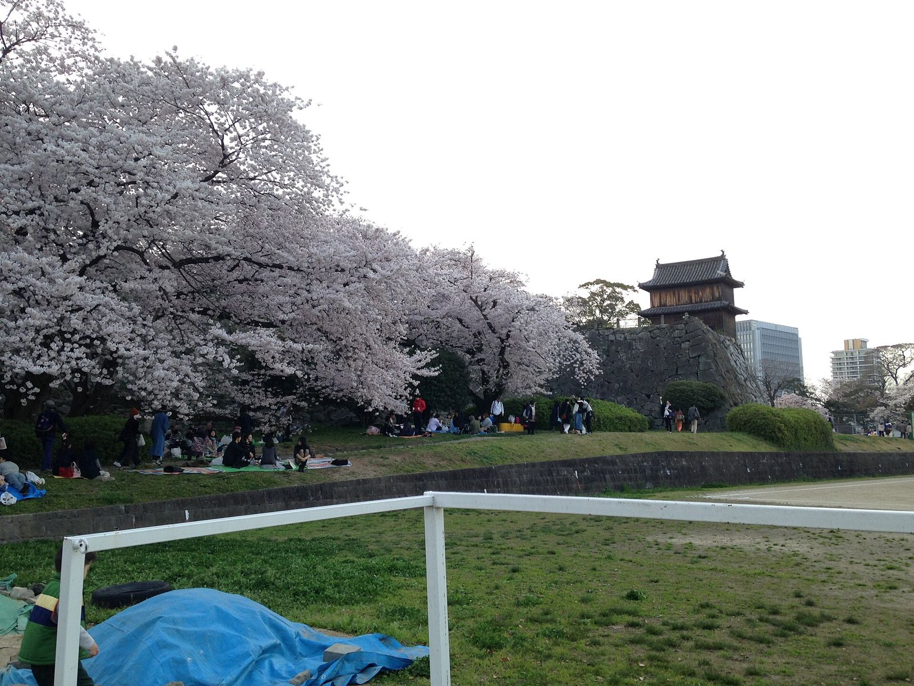
Fukuoka Castle ruins & Maizuru Park · 2016. Photo: そらみみ (Soramimi), CC BY-SA 4.0, via Wikimedia Commons
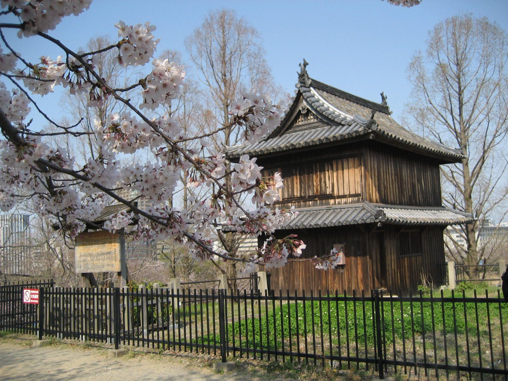
Fukuoka Castle ruins & Maizuru Park · 2008. Photo: Masgatotkaca, CC BY-SA 3.0, via Wikimedia Commons
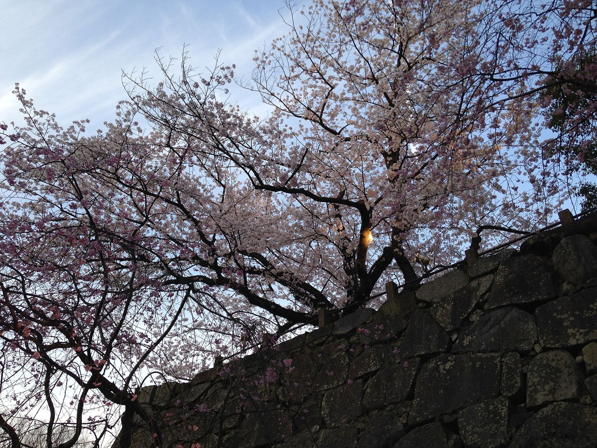
Fukuoka Castle ruins & Maizuru Park · 2016. Photo: そらみみ (Soramimi), CC BY-SA 4.0, via Wikimedia Commons
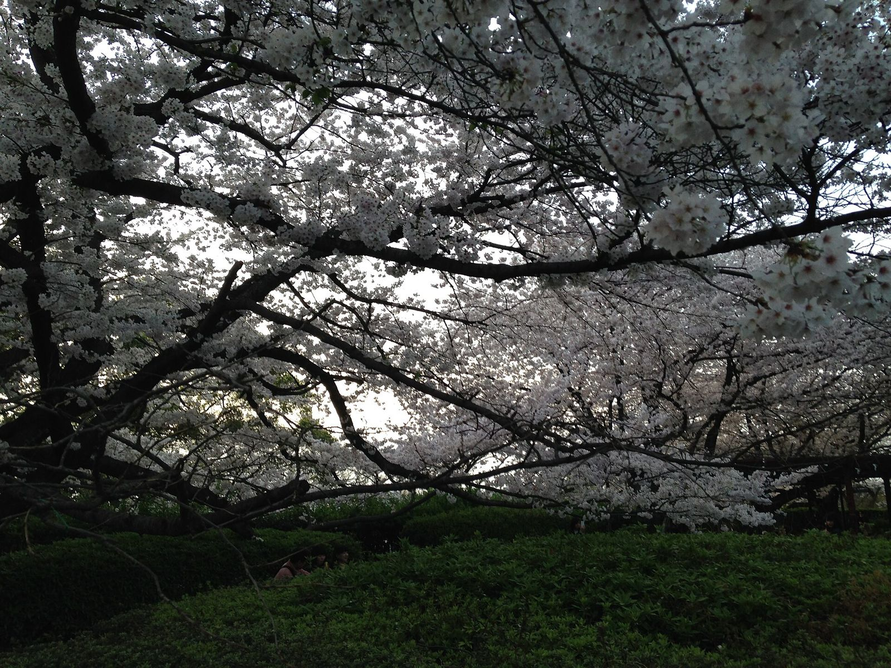
Fukuoka Castle ruins & Maizuru Park · 2016. Photo: そらみみ (Soramimi), CC BY-SA 4.0, via Wikimedia Commons
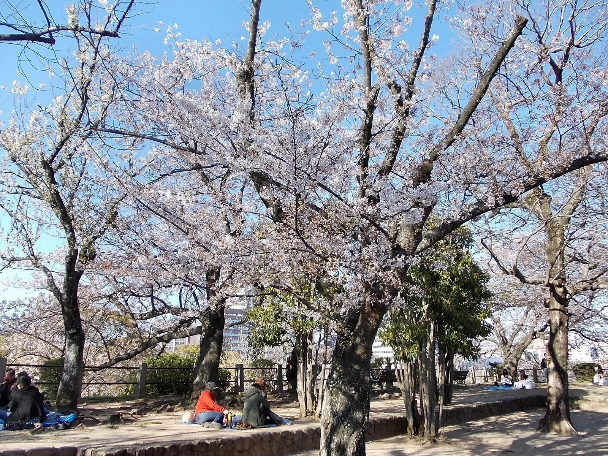
Fukuoka Castle ruins & Maizuru Park · 2012. Photo: STA3816, CC BY-SA 3.0, via Wikimedia Commons
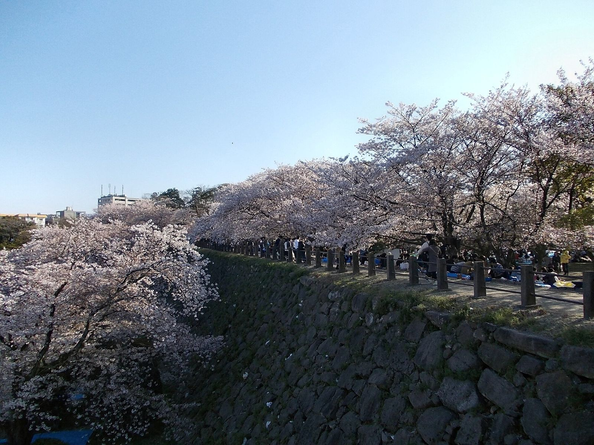
Fukuoka Castle ruins & Maizuru Park · 2012. Photo: STA3816, CC BY-SA 3.0, via Wikimedia Commons
1 / 6
Fukuoka Castle ruins & Maizuru Park 舞鶴公園・福岡城跡
Kyushu
About 1,000 cherry trees around the stone walls of Fukuoka Castle, right in the city, so it pairs with a city hotel and great food.
Best timing
Late March to early April (JMA normal full bloom in Fukuoka: Mar 31). japan-guide’s 2026 best viewing: Apr 1–8.
Night
2026 illumination Mar 25–Apr 8, 6–10 pm; ¥600 per area or ¥1,500 for all three areas. source
Getting there
Ohorikoen or Akasaka subway stations, a few minutes from central Fukuoka.
Mount Yoshino · 2012. Photo: KimonBerlin, CC BY-SA 2.0, via Wikimedia Commons
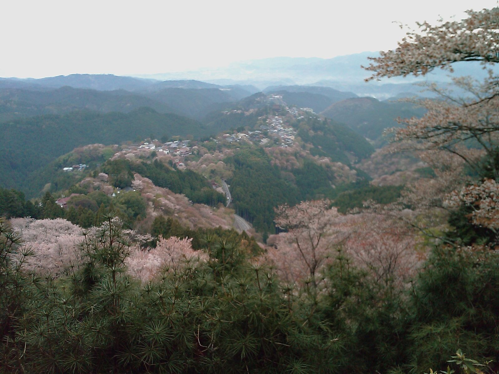
Mount Yoshino. Photo: usui.mobile, CC BY-SA 3.0, via Wikimedia Commons
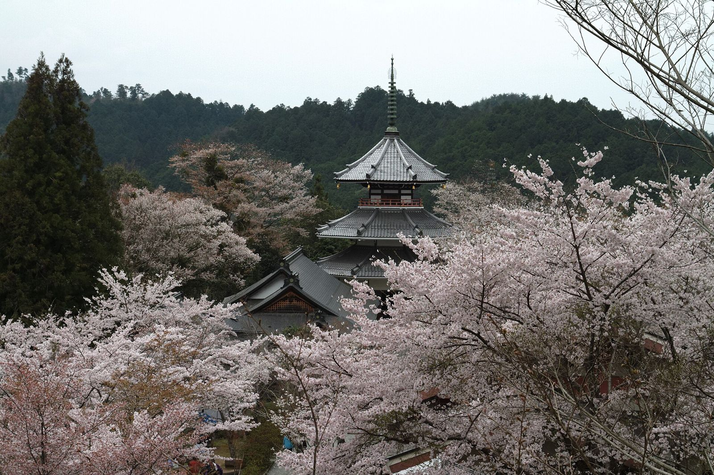
Mount Yoshino · 2012. Photo: KimonBerlin, CC BY-SA 2.0, via Wikimedia Commons
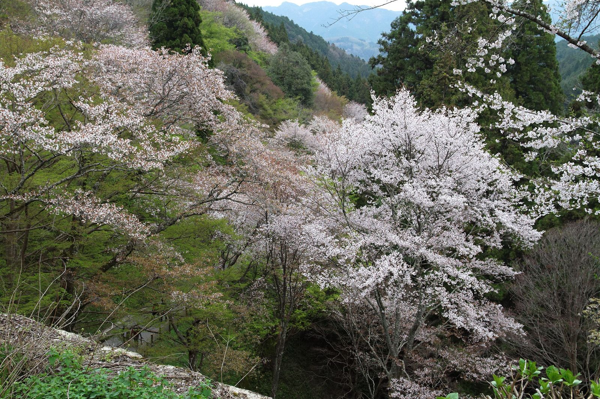
Mount Yoshino · 2012. Photo: KimonBerlin, CC BY-SA 2.0, via Wikimedia Commons
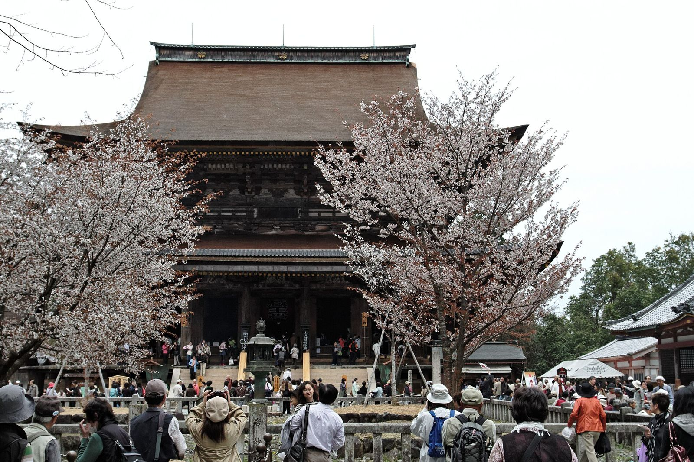
Mount Yoshino · 2012. Photo: KimonBerlin, CC BY-SA 2.0, via Wikimedia Commons
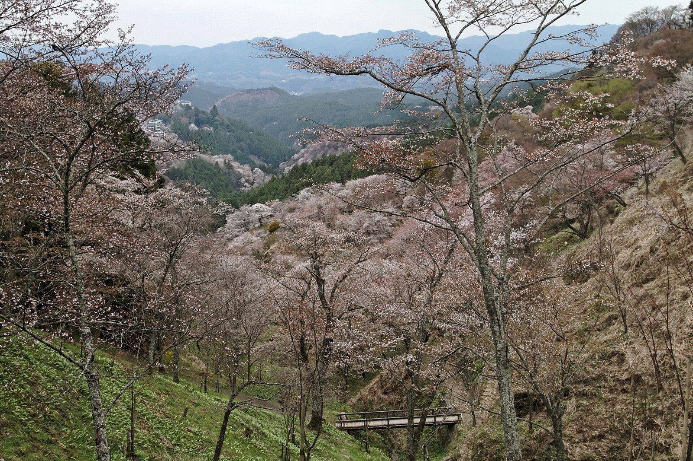
Mount Yoshino · 2012. Photo: KimonBerlin, CC BY-SA 2.0, via Wikimedia Commons
1 / 6
Mount Yoshino 吉野山
Kansai
Japan’s most famous sakura mountain. Its four zones (Shimo, Naka, Kami and Oku Senbon) bloom one after another going uphill, so the season lasts weeks.
Best timing
Early to mid April. In 2026 the town reported full bloom: Shimo (lower) Apr 1, Naka Apr 2, Kami Apr 4, Oku (top) Apr 9.
Night
No official light-up confirmed. In 2026 seasonal shuttle buses ran Mar 20–Apr 19. source
Getting there
From Kyoto about 100 minutes by Kintetsu limited express, changing at Kashiharajingu-mae.
Kenrokuen & Kanazawa Castle Park · 2008. Photo: KimonBerlin, CC BY-SA 2.0, via Wikimedia CommonsKenrokuen & Kanazawa Castle Park · 2008. Photo: KimonBerlin, CC BY-SA 2.0, via Wikimedia CommonsKenrokuen & Kanazawa Castle Park · 2019. Photo: Zairon, CC BY-SA 4.0, via Wikimedia Commons
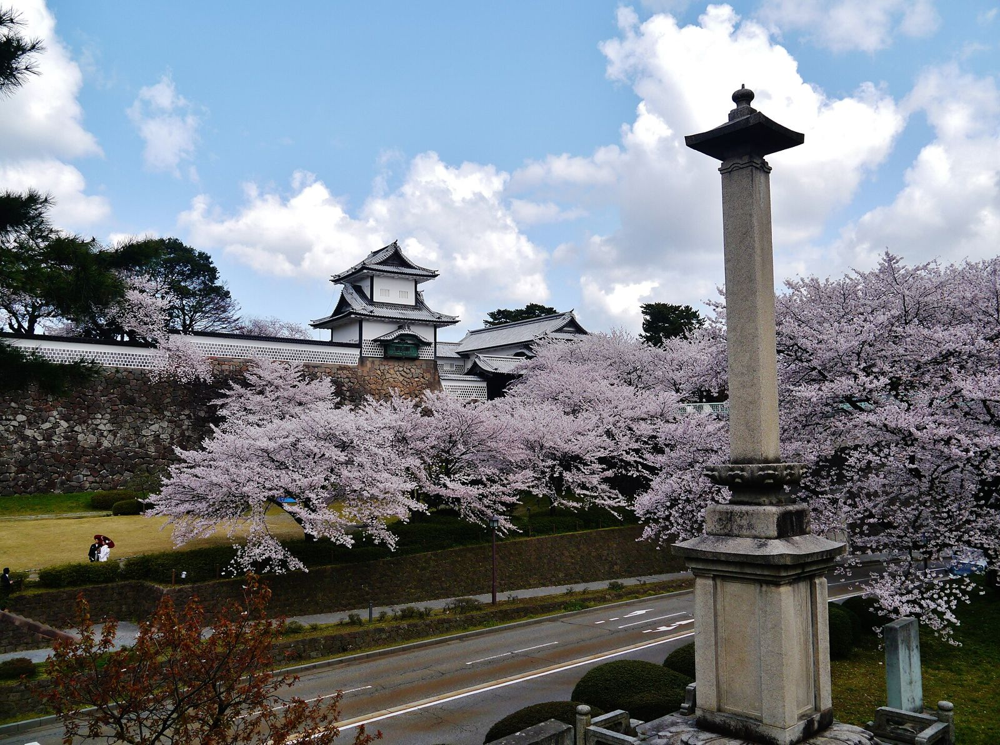
Kenrokuen & Kanazawa Castle Park · 2019. Photo: Zairon, CC BY-SA 4.0, via Wikimedia CommonsKenrokuen & Kanazawa Castle Park · 2019. Photo: Zairon, CC BY-SA 4.0, via Wikimedia Commons
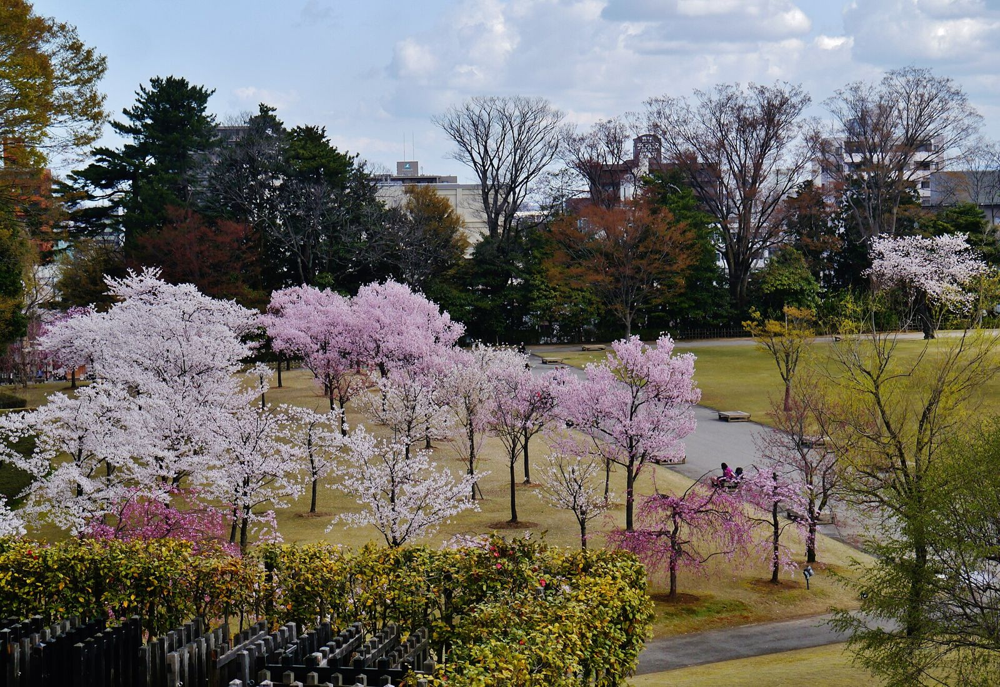
Kenrokuen & Kanazawa Castle Park · 2019. Photo: Zairon, CC BY-SA 4.0, via Wikimedia Commons
1 / 6
Kenrokuen & Kanazawa Castle Park 兼六園・金沢城公園
Hokuriku
One of Japan’s three great gardens, with the castle park across the street. The best sakura stop that’s only two hours from Kyoto.
Best timing
Early to mid April (JMA normal full bloom in Kanazawa: Apr 8). japan-guide’s 2026 best viewing: Apr 2–9.
Night
2026: free admission and evening light-up Apr 2–8; garden open 7 am–9:30 pm, lit from sunset. source
Getting there
Kyoto → Kanazawa about 1h48–2h04 (Thunderbird to Tsuruga, then the Hokuriku Shinkansen; 8-minute transfer).
Takayama: Nakabashi Bridge & Miyagawa River · 2015. Photo: 大野 一将, CC BY-SA 4.0, via Wikimedia CommonsTakayama: Nakabashi Bridge & Miyagawa River · 2016. Photo: 大野 一将, CC BY-SA 4.0, via Wikimedia CommonsTakayama: Nakabashi Bridge & Miyagawa River · 2016. Photo: Oren Rozen, CC BY-SA 4.0, via Wikimedia CommonsTakayama: Nakabashi Bridge & Miyagawa River · 2015. Photo: Opqr, CC BY-SA 4.0, via Wikimedia CommonsTakayama: Nakabashi Bridge & Miyagawa River · 2015. Photo: Opqr, CC BY-SA 4.0, via Wikimedia Commons
1 / 5
Takayama: Nakabashi Bridge & Miyagawa River 高山・中橋
Japan Alps
The red Nakabashi Bridge and riverside trees in an old merchant town. The huge old Garyu-zakura tree is a short train ride south, beside Hida-Ichinomiya Station.
Best timing
Mid to late April in an average year (japan-guide); 2026 best viewing was Apr 8–13.
Night
No light-up details confirmed for 2027.
Getting there
From Kanazawa by reserved-seat highway bus: about 2h15 including a stop at Shirakawa-go (¥4,200 through fare).
Matsumoto Castle · 2016. Photo: Oren Rozen, CC BY-SA 4.0, via Wikimedia Commons
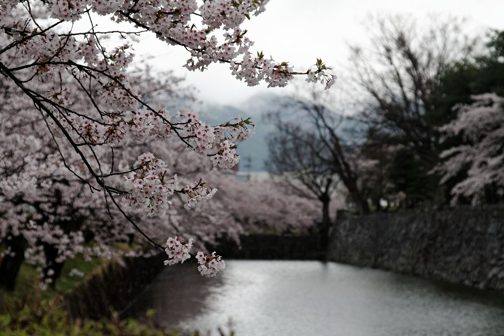
Matsumoto Castle · 2012. Photo: KimonBerlin, CC BY-SA 2.0, via Wikimedia CommonsMatsumoto Castle · 2012. Photo: KimonBerlin, CC BY-SA 2.0, via Wikimedia Commons
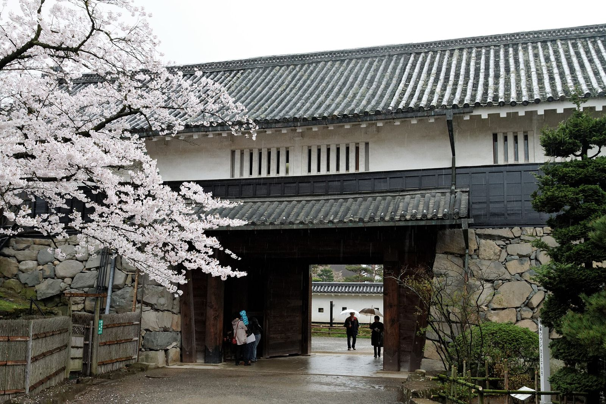
Matsumoto Castle · 2012. Photo: KimonBerlin, CC BY-SA 2.0, via Wikimedia CommonsMatsumoto Castle · 2026. Photo: なごやか, CC0, via Wikimedia Commons
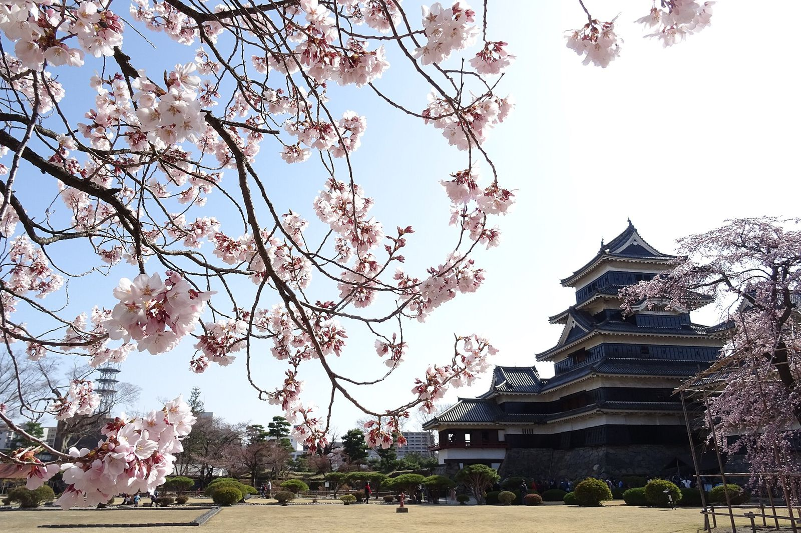
Matsumoto Castle · 2018. Photo: Taka1, CC BY-SA 4.0, via Wikimedia Commons
1 / 6
Matsumoto Castle 松本城
Japan Alps
A black original castle with moats and about 300 cherry trees, and the snowy Alps behind it on a clear day.
Best timing
Early to mid April (japan-guide); 2026 best viewing was Apr 4–9.
Night
Night viewing runs for 8 days, starting the third day after it’s announced: 5:30–9 pm, Honmaru Garden free (no keep entry). “Corridor of the Light” 6:30–9 pm (Fri–Sat to 10 pm). source
Getting there
From Takayama 2h20 by reserved highway bus (¥4,400). To Shinjuku about 2h31–2h54 on the Azusa.
Miharu Takizakura · 2009. Photo: 京浜にけ at Japanese Wikipedia, CC BY-SA 3.0, via Wikimedia CommonsMiharu Takizakura · 2026. Photo: くろふね, CC BY 4.0, via Wikimedia CommonsMiharu Takizakura · 2011. Photo: ayu oshimi from japan, CC BY-SA 2.0, via Wikimedia CommonsMiharu Takizakura · 2010. Photo: Tadashi Okoshi, CC BY 2.0, via Wikimedia CommonsMiharu Takizakura · 2026. Photo: くろふね, CC BY 4.0, via Wikimedia CommonsMiharu Takizakura · 2012. Photo: Camerakid, CC BY-SA 3.0, via Wikimedia Commons
1 / 6
Miharu Takizakura 三春滝桜
Tohoku
A single weeping cherry over 1,000 years old, one of Japan’s most famous trees. Its name means “waterfall cherry”.
Best timing
Around mid April (japan-guide). JMA normal full bloom in nearby Fukushima city: Apr 11. japan-guide’s 2026 best viewing: Apr 6–12 (Fukushima).
Night
It has been lit at night in past seasons (see photo), so check 2027 hours. ¥500 entry in season. 2026 temporary bus ran Apr 4–12. source
Getting there
Tokyo → Koriyama about 80 min by Shinkansen, then 12 min to Miharu and the seasonal bus.
Kakunodate · 2018. Photo: 掬茶, CC BY-SA 4.0, via Wikimedia CommonsKakunodate · 2018. Photo: 掬茶, CC BY-SA 4.0, via Wikimedia CommonsKakunodate · 2018. Photo: 掬茶, CC BY-SA 4.0, via Wikimedia CommonsKakunodate. Photo: Koichi Shibata, CC BY-SA 3.0, via Wikimedia CommonsKakunodate · 2018. Photo: 掬茶, CC BY-SA 4.0, via Wikimedia CommonsKakunodate · 2018. Photo: 掬茶, CC BY-SA 4.0, via Wikimedia Commons
1 / 6
Kakunodate 角館
Tohoku
About 400 weeping cherries over black samurai-house walls, and a similar number of Somei Yoshino along 2 km of the Hinokinai River, which bloom a little later.
Best timing
Late April in an average year (JMA normal full bloom in Akita: Apr 22). In 2026 the weeping cherries were well past their best by Apr 20, with the riverside trees at the end of their peak.
Night
The festival runs Apr 15–May 5 every year. 2026 illuminations: samurai district 5:30–10 pm, Hinokinai River 5:30 pm–midnight. source
Getting there
About 3 hours from Tokyo on the Komachi Shinkansen, or 45 minutes from Morioka.
Hirosaki Park · 2021. Photo: mko294, CC BY 4.0, via Wikimedia CommonsHirosaki Park. Photo: MAKIKO OMOKAWA, CC BY-SA 3.0, via Wikimedia CommonsHirosaki Park. Photo: Feri88, CC BY 3.0, via Wikimedia CommonsHirosaki Park · 2026. Photo: 掬茶, CC BY-SA 4.0, via Wikimedia CommonsHirosaki Park · 2022. Photo: Raita Futo from Tokyo, Japan, CC BY 2.0, via Wikimedia CommonsHirosaki Park · 2015. Photo: Kaburamata, CC BY-SA 4.0, via Wikimedia Commons
1 / 6
Hirosaki Park 弘前公園
Tohoku
About 2,600 trees of 52 varieties around a castle and its moats. Late in the season, fallen petals carpet the moats.
Best timing
Late April. Somei Yoshino peaked Apr 23–27 in 2025, Apr 19–22 in 2024 and Apr 13–15 in 2023. japan-guide’s 2026 best viewing: Apr 16–21.
Night
2027 festival: Fri Apr 16–Wed May 5. Trees lit from sunset to 10 pm. The castle keep is being moved back (work began Nov 23, 2025), so its interior is closed for several years. source
Getting there
Tokyo → Shin-Aomori about 3h10 on the Hayabusa, then about 30 min on the Tsugaru limited express. Akita → Hirosaki about 2 hours.
Goryokaku Park, Hakodate · 2018. Photo: Goryokaku-Tower, CC BY 4.0, via Wikimedia CommonsGoryokaku Park, Hakodate · 2017. Photo: Goryokaku-Tower, CC BY 4.0, via Wikimedia CommonsGoryokaku Park, Hakodate · 2008. Photo: Yamaguchi Yoshiaki from Japan, CC BY-SA 2.0, via Wikimedia CommonsGoryokaku Park, Hakodate · 2017. Photo: Iso10970, CC BY-SA 4.0, via Wikimedia CommonsGoryokaku Park, Hakodate. Photo: pakku, CC BY 3.0, via Wikimedia CommonsGoryokaku Park, Hakodate · 2008. Photo: Yamaguchi Yoshiaki from Japan, CC BY-SA 2.0, via Wikimedia Commons
1 / 6
Goryokaku Park, Hakodate 五稜郭公園
Hokkaido
More than 1,000 cherry trees inside a star-shaped Western-style fort. See the star shape from Goryokaku Tower next door.
Best timing
Late April to early May (JMA normal full bloom in Hakodate: May 2). japan-guide’s 2026 best viewing: Apr 20–27 (Hakodate).
Night
Not confirmed for 2027.
Getting there
10-minute walk from Goryokaku Koen-mae tram stop. Shin-Aomori → Shin-Hakodate-Hokuto about 1 hour by Shinkansen.
Sample nights are for different dates (shown on each hotel card). Michelin Keys are from the 2026 Japan selection.
Where to stay
Our picks are Michelin Key hotels and ryokan (2026 selection) plus the Hyatt hotels that matter for your Globalist status. Photos are the hotels’ own images via the MICHELIN Guide. Quotes are copied word for word from the linked source; “Guest” quotes are verified guest reviews shown on the MICHELIN Guide booking page.
How to read prices. Prices are real quotes for 2 adults, 1 night, from the MICHELIN Guide (Tablet) booking calendar, checked Oct 31, 2026. They are typical, not guaranteed, so check live before booking. Chase points: at 1¢ each = USD × 100; with Points Boost at up to 2¢ = USD × 50 (only on eligible bookings, and Chase Travel inventory varies). Points below use the price with tax.
Garden villas on a hillside at the Miyahama hot springs, looking across to Miyajima; Michelin says it’s forty minutes by car from Hiroshima. Michelin notes rates from ¥38,500 per night, but no spring dates were open to check.
Price
No spring 2027 dates were bookable on the MICHELIN Guide calendar when checked (Oct 31, 2026). Check the hotel or Chase Travel live.
Chase points
USD × 100 at 1¢, or USD × 50 with Points Boost
What reviewers say
“Here the nine rooms are actually detached villas, cascading down the terraced hillside.”— MICHELIN Guide inspectors
“This is the Japanese country life we’re always going on about, at its finest”— MICHELIN Guide inspectors
“Koi pond outside the room, great food. best ryokan i've stayed in and excellent value.”— Guest review, MICHELIN Guide
Adrian Zecha’s (Aman founder) ryokan in a restored 140-year-old merchant estate on Ikuchijima island in the Inland Sea.
Price
$876 before tax · $1,052 with tax (¥165,770) for Suzumi on Tue Mar 30, 2027; breakfast included; free cancellation until 7 days before. Calendar Mar 29–Apr 8: $854–$982/night before tax. Typical; check live.
Chase points
105,154 points at 1¢ · 52,577 with Points Boost
What reviewers say
“The hotel is a fresh riff on the traditional ryokan, fusing exquisite craftsmanship with a minimal, modern edge”— Condé Nast Traveler
A modern ryokan at Yamashiro Onsen, about an hour’s drive from Kanazawa (Michelin). Every room has a private open-air hot-spring bath.
Price
$1,078 before tax · $1,307 with tax (¥170,000) for Western Premier Garden View Room on Thu Apr 1, 2027; breakfast and dinner included; free cancellation until 22 days before. Calendar Apr 1–Apr 12: $1,078–$1,180/night before tax. Typical; check live.
253 rooms right by Kanazawa Station, the easy base for Kenrokuen and the Shinkansen. A practical points stay, not a luxury splurge.
Price
No spring 2027 dates were bookable on the MICHELIN Guide calendar when checked (Oct 31, 2026). Check the hotel or Chase Travel live.
Chase points
USD × 100 at 1¢, or USD × 50 with Points Boost
World of Hyatt
Category 3: 8k–20k points per night for a standard room (five date-based levels in the chart in effect since May 20, 2026). Sources: Japan Hyatt category list (Jan 29, 2026) and 2026 award chart. Check hyatt.com for your dates before moving Chase points; transfers can’t be undone.
Your Globalist perks apply here. Hyatt’s Tiers & Benefits page lists: Room upgrade (as available at check-in); late checkout (as available at some locations); club access or breakfast; resort fees waived on eligible rates and free night awards; premium internet; bottled water; early access to award night inventory. Hyatt adds that in-hotel benefits “vary by membership tier and by participating hotel” and that “some benefits are subject to availability.” Source: World of Hyatt Tiers & Benefits (read Oct 31, 2026 from the 2026 archived copy because the live page was rate-limiting). Confirm late checkout and upgrades with the hotel.
What reviewers say
“a hotel that is thoroughly contemporary, full of modern Western design furniture and boutique-chic graphic interior design”— MICHELIN Guide inspectors
“the 14th-floor Roof Terrace Bar offers expansive views of Kanazawa from its picture windows and open-air terrace.”— MICHELIN Guide inspectors
A classic mountain ryokan in Nagano, a half hour from Matsumoto (Michelin). Base for Matsumoto Castle and a Takato day trip.
Price
$477 before tax · $574 with tax (¥90,200) for Western-style Otaka Room on Mon Mar 22, 2027 (April rates weren’t open yet, so this is a late-March night); meals not listed; cancellation terms not shown. Calendar Mar 20–Mar 31: $405–$613/night before tax. Typical; check live.
Chase points
57,407 points at 1¢ · 28,704 with Points Boost
What reviewers say
“you’re surrounded by nothing but forested mountainsides as far as the eye can see.”— MICHELIN Guide inspectors
A former imperial-family retreat in Hakone, now one of Japan’s top ryokan.
Price
$1,053 before tax · $1,192 with tax (¥166,000) for Standard Room B on Mon Mar 29, 2027; breakfast and dinner included; free cancellation until 14 days before. Calendar Mar 29–Apr 12: $1,053–$1,725/night before tax. Typical; check live.
Chase points
119,179 points at 1¢ · 59,590 with Points Boost
What reviewers say
“a one-time imperial family retreat, now a first-class ryokan inn in the middle of the Hakone national park”— MICHELIN Guide inspectors
“enjoy the utter silence of the Hakone national park — it feels a long, long way from Tokyo.”— MICHELIN Guide inspectors
“The hotel was beautiful, the onsens were gorgeous and clean, and the service was amazing”— Guest review, MICHELIN Guide
The newer sister of Gora Kadan in Oyama, at the foot of Fuji. Every suite and villa faces the peak and has an open-air bath. About 35 minutes by car from Mishima Station (CN Traveler).
Price
$1,246 before tax · $1,497 with tax (¥236,000) for Standard Suite with Wooden Bath King B on Sun Apr 11, 2027; meals not listed; free cancellation until 31 days before. Calendar Apr 3–Apr 18: $1,247–$1,300/night before tax. Typical; check live.
Chase points
149,703 points at 1¢ · 74,852 with Points Boost
What reviewers say
“If Mount Fuji is the star of the show here, Gora Kadan Fuji is the auditorium”— Condé Nast Traveler
“on a clear day, the views from Gora Kadan Fuji are absolutely breathtaking.”— Condé Nast Traveler
“Each one of the suites and villas has a view of Fuji’s peak, as well as an open-air private bath”— MICHELIN Guide inspectors
80 rooms in Gora, Hakone, about 1 km from Gora Kadan. The best Hyatt option for a points-funded Hakone night.
Price
No spring 2027 dates were bookable on the MICHELIN Guide calendar when checked (Oct 31, 2026). Check the hotel or Chase Travel live.
Chase points
USD × 100 at 1¢, or USD × 50 with Points Boost
World of Hyatt
Category 6: 20k–40k points per night for a standard room (five date-based levels in the chart in effect since May 20, 2026). Sources: Japan Hyatt category list (Jan 29, 2026) and 2026 award chart. Check hyatt.com for your dates before moving Chase points; transfers can’t be undone.
Your Globalist perks apply here. Hyatt’s Tiers & Benefits page lists: Room upgrade (as available at check-in); late checkout (as available at some locations); club access or breakfast; resort fees waived on eligible rates and free night awards; premium internet; bottled water; early access to award night inventory. Hyatt adds that in-hotel benefits “vary by membership tier and by participating hotel” and that “some benefits are subject to availability.” Source: World of Hyatt Tiers & Benefits (read Oct 31, 2026 from the 2026 archived copy because the live page was rate-limiting). Confirm late checkout and upgrades with the hotel.
What reviewers say
“exceptional for being an international-style luxury hotel in the rural spa territory ordinarily reserved for Japan’s traditional inns.”— MICHELIN Guide inspectors
“this is a resort hotel — you’ll have to get comfortable with the hotel’s restaurants”— MICHELIN Guide inspectors
120 rooms beside the Fuji Speedway in Oyama, with Fuji views, an onsen spa and a motorsport museum. About 5 km from Gora Kadan Fuji.
Price
No spring 2027 dates were bookable on the MICHELIN Guide calendar when checked (Oct 31, 2026). Check the hotel or Chase Travel live.
Chase points
USD × 100 at 1¢, or USD × 50 with Points Boost
World of Hyatt
Category 6: 20k–40k points per night for a standard room (five date-based levels in the chart in effect since May 20, 2026). Sources: Japan Hyatt category list (Jan 29, 2026) and 2026 award chart. Check hyatt.com for your dates before moving Chase points; transfers can’t be undone.
Your Globalist perks apply here. Hyatt’s Tiers & Benefits page lists: Room upgrade (as available at check-in); late checkout (as available at some locations); club access or breakfast; resort fees waived on eligible rates and free night awards; premium internet; bottled water; early access to award night inventory. Hyatt adds that in-hotel benefits “vary by membership tier and by participating hotel” and that “some benefits are subject to availability.” Source: World of Hyatt Tiers & Benefits (read Oct 31, 2026 from the 2026 archived copy because the live page was rate-limiting). Confirm late checkout and upgrades with the hotel.
What reviewers say
“Perhaps only in Japan would a hotel on the site of a racetrack be an unusually fine one.”— MICHELIN Guide inspectors
“The rooms are handsome and minimalist in style, and feature soaking tubs and rain showers”— MICHELIN Guide inspectors
24 villas on Koiwai Farm at the foot of Mount Iwate, by Fumitomo Hayase (ex-Aman Tokyo). A base for Kakunodate.
Price
$1,332 before tax · $1,598 with tax (¥251,900) for Forest Villa on Mon Apr 12, 2027; all-inclusive; free cancellation until 14 days before. Calendar Apr 12–Apr 26: $1,332–$1,593/night before tax. Typical; check live.
Six suites in and beside a 1908 red-brick former Russian consulate in Hakodate; every suite has a private sauna.
Price
$1,876 before tax · $1,876 with tax (¥295,680) for Consulate Suite A on Sun Apr 18, 2027; breakfast included; free cancellation until 14 days before. Calendar Apr 18–May 6: $1,837–$1,837/night before tax. Typical; check live.
Chase points
187,561 points at 1¢ · 93,780 with Points Boost
What reviewers say
“this unusual red brick building was constructed in 1908 as a consulate serving the pre-Revolution Russian Empire.”— MICHELIN Guide inspectors
Grand Hyatt Fukuoka (Hyatt Category 4, 12k–25k points; Globalist perks apply) is the points alternative to the Ritz-Carlton in Fukuoka.
Park Hyatt Niseko Hanazono (Category 8, Michelin 1 Key) only fits a May trip, and Niseko’s Hanazono resort closes between seasons: in 2026 winter ended Apr 12 and the green season opened Apr 29. Check the hotel’s own dates.
Zaborin may be bookable through Hyatt’s Mr & Mrs Smith partnership. We couldn’t confirm whether points or Globalist perks apply, so check on hyatt.com.
Tsuruko in Kanazawa got a new Michelin Key for 2026 but wasn’t reviewed here.
Hyatt Centric and Hyatt Regency are listed by the MICHELIN Guide but have no Key; they’re here for points value, not as top-tier luxury.
Other train times (Kyoto → Mishima, Himeji ↔ Kyoto and Hiroshima, Hakata ↔ Kumamoto and Hiroshima, Matsumoto → Shinjuku) come from timetable searches (NAVITIME, ekitan) run Oct 31, 2026; check exact departures nearer the time. Not verified: 2027 light-up dates (none announced yet), live Hyatt award availability, whether Chase Travel lists each hotel, and Hakone’s own bloom timing. Prices change daily.